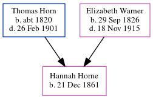

Hannah Horne 1861 -
[ Home ] | [ Calendar ] | [ Surnames Index ] | [ Errors ] | [ Family History ]A domestic housemaid and the child of Thomas Horn (a farm bailiff) and Elizabeth Warner (a general shopkeeper), Hannah Horne, the great-great-aunt of Nigel Horne, was born in St Peters, Thanet, Kent, England on 21 Dec 18611,2 and baptised there on 9 Feb 1862.
During her life, she was living at Northdown, Margate, Kent, England on 2 Apr 18713; at High Street, Ramsgate, Kent on 3 Apr 18815; and at 4 Chandos Place, Broadstairs, Kent on 5 Apr 18914.
Parents
- Thomas was born c. 1820
- Elizabeth Ann was born on 29 Sept 1826
Citations
- 1871 England Census Online publication - Provo, UT, USA: The Generations Network, Inc., 2004.Original data - Census Returns of England and Wales, 1871. Kew, Surrey, England: The National Archives of the UK (TNA): Public Record Office (PRO), 1871. Data imaged from the National
- England & Wales, FreeBMD Birth Index, 1837-1915 Online publication - Provo, UT, USA: The Generations Network, Inc., 2006.Original data - General Register Office. England and Wales Civil Registration Indexes. London, England: General Register Office. © Crown copyright. Published by permission of the Cont
- 1871 England, Wales & Scotland Census - Findmypast (was age 9 and the daughter of the head of the household)
- 1891 England, Wales & Scotland Census - Findmypast (was age 27 and a servant in the household)
- 1881 England, Wales & Scotland Census - Findmypast (was age 19 and a servant in the household)
Media
1891 England, Wales & Scotland Census Transcription - GBC-1891-0005911619
1881 England, Wales & Scotland Census - GBC/1881/0004844413
Family Tree
Map
Generated by ged2site. Last updated on Jul 3, 2024
Known Issues
Surname is different from both parents